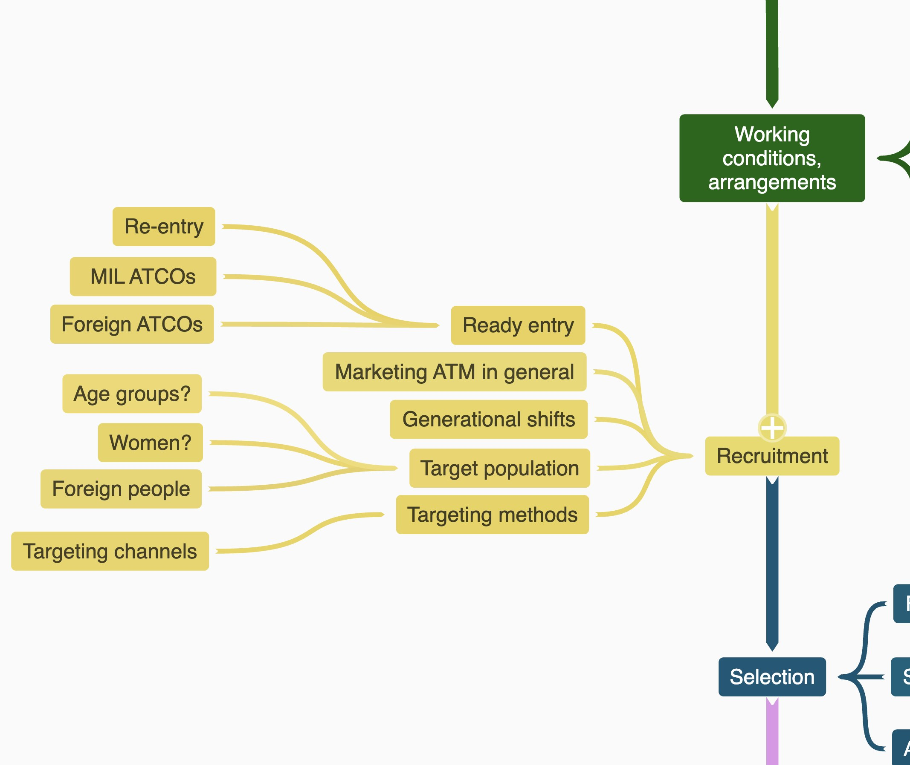

Attracting and recruiting candidates
Recruitment depends on the future controller profile, the candidate population and the way the profession is presented. It also connects to retention and opportunities to reuse existing expertise.
Recruitment and the future workforce

Ready-entry
Beyond initial recruitment, the workforce context is also shaped by how existing expertise is retained and reused. Side-branches such as re-entry schemes, the integration of foreign ATCOs and flexible working arrangements can help mitigate demographic pressure and temporary shortages. However, their effectiveness depends on whether training, validation and licensing frameworks allow competence to be built, recognised and maintained in a system-oriented rather than purely local manner. If competence is tightly bound to specific sectors or national contexts, opportunities for flexibility and workforce optimisation remain limited.
Target population
As with all recruitment activities, ATCO recruitment should start with defining the target population. This is done by defining specifications in terms of demographic characteristics, education, personality traits, cognitive capabilities and other relevant psychological parameters. All of these specifications are ideally based on what is required from ATCOs during operations, and should also consider the future evolution of the job.
While being specific during this phase naturally narrows the target population, it enables more targeted recruiting, which in turn may save effort during the selection phase. On the other hand, by adjusting working arrangements and opening previously unavailable options, ANSPs may be able to broaden the target population and attract applicants who were previously excluded from the recruitment process.
Targeting channels and methods
We understand that aviation and air traffic management have historically been attractive professions, with an exclusive and exciting appeal, fueled by pop culture references to aviators, pilots, flight crews, and aviation in general. While some of that appeal remains today, aviation has been commercialised; air travel is more accessible than ever before, and the industry's environmental impact has introduced controversy into the public perception of air transport.
In addition, there are significant ongoing changes in media consumption across nearly all demographic groups, and these changes are even more apparent when we compare practices from previous decades with those of today. The population targeted by ANSPs almost certainly will not have the same habits and preferences for consuming media content as they did 10 or 20 years ago.
This has dual implications: on the one hand, the channels and methods used to target potential candidates may need to be subject to constant revision and tweaking. On the other hand, the messages transmitted through these channels and methods may also need revision and refinement.
For the ANSPs accustomed to a steady and ample flow of applicants whenever vacancies were posted, these changes may pose new challenges. However, these are not different from those experienced in other industries, and the good news is that there are already plenty of solutions and methodologies which can be applied. In fact, several ANSPs have already reported great success in collaborating with various recruitment and communication agencies and applying state-of-the-art methodologies to attract new applicants.
Recruitment challenges and measures
Recruitment covers the processes through which ANSPs attract potential candidates to the ATCO profession and encourage them to enter the workforce pipeline. It includes employer attractiveness, outreach activities, eligibility requirements and the factors influencing the size and quality of the candidate pool. As the entry point to the ATCO management cycle, recruitment directly determines the volume of candidates available for selection and, ultimately, the number of future controllers that can enter training.
Recruitment received High Incidence and Medium Severity classifications. It was discussed widely, although the severity of recruitment constraints varied across ANSPs.
The consultation process revealed broad agreement among ANSPs regarding the importance of maintaining a sufficient pipeline of qualified candidates entering the profession. Stakeholders consistently highlighted the need to attract suitable candidates in a labour market characterised by increasing competition for highly skilled personnel. There was also widespread recognition that recruitment is not simply a question of generating applications, but rather of ensuring that enough suitable candidates progress into the selection and training process.
However, notable differences emerged regarding the attractiveness of the profession and the ease with which candidates can be recruited. While some ANSPs reported strong applicant volumes and relatively limited recruitment difficulties, others highlighted challenges related to labour-market conditions, demographic trends, national legal constraints and the limited visibility of the profession among younger generations. These differences reflect the diversity of operational, economic and institutional environments across the European ATM network.
Recruitment determines the size and quality of the pipeline entering the ATCO profession and therefore directly influences the long-term availability of ATCOs. As the first stage of the ATCO management cycle, it establishes the pool of candidates from which future controllers are selected. Weaknesses in recruitment can limit the effectiveness of the subsequent training process, making it difficult for ANSPs to meet future staffing requirements even when sufficient training capacity is available.
The challenges identified within Recruitment primarily concern the difficulty of attracting and maintaining a sufficiently large pool of suitable candidates. Stakeholders emphasised that workforce shortages are not necessarily caused by a lack of interest in the profession, but rather by the limited proportion of applicants who ultimately meet the requirements needed to become ATCOs. The challenges therefore affect both the size and the quality of the recruitment pipeline.
Challenges reported in Recruitment (Source: Consortium assessment)
| ID | Challenge | Rationale | ANSPs reporting |
|---|---|---|---|
| H-R.1 | Restrictions on age-based recruitment criteria | Legal limitations on the use of age-based recruitment criteria reduce the ability of some ANSPs to tailor recruitment strategies to long-term workforce planning considerations. | 7 (41%) |
| H-R.2 | Limited availability of suitable candidates | Recruitment campaigns may attract large numbers of applicants, but only a relatively small proportion possess the aptitude and characteristics required to succeed in ATCO training and operations. As a result, workforce constraints are often driven by the quality rather than the quantity of applications received. | 5 (29%) |
| H-R.3 | Restrictive medical requirements | Medical certification requirements may exclude otherwise suitable candidates from the recruitment pipeline, reducing the pool of applicants capable of progressing into training. | 5 (29%) |
| H-R.4 | Limited awareness of the profession | The ATCO profession and, in some cases, individual ANSPs may lack visibility among potential applicants, limiting the size of the candidate pool entering recruitment processes. | 5 (29%) |
| H-R.5 | Financial barriers to entry into training | Training arrangements involving limited remuneration or prolonged periods without income may discourage otherwise suitable candidates from pursuing the profession. | 2 (12%) |
The challenges identified within Recruitment demonstrate that workforce shortages are influenced not only by the number of candidates entering the pipeline, but also by the ability of ANSPs to attract individuals capable of successfully progressing through selection and training. Stakeholders repeatedly highlighted that the principal bottleneck lies in identifying suitable candidates rather than generating interest in the profession itself.
Several ANSPs reported concerns regarding the visibility and attractiveness of the profession, emphasising that potential candidates are often unaware of ATC as a career option. Others highlighted medical requirements and legal constraints affecting recruitment eligibility as factors capable of reducing the available candidate pool. Together, these challenges limit the number of candidates that can enter the workforce pipeline despite the existence of operational demand for additional controllers.
The consultation also revealed that recruitment conditions vary considerably across Europe. Some ANSPs operate in environments where attracting candidates is relatively straightforward, while others face structural labour-market constraints or demographic challenges. These differences explain why Recruitment, despite exhibiting a high incidence across the consultation process, does not emerge as a uniformly severe constraint across all participating ANSPs.
The solutions identified within Recruitment focus on expanding the pool of suitable candidates entering the profession while reducing barriers that may unnecessarily restrict access to the workforce pipeline. Most measures seek to improve the attractiveness and visibility of the profession, while others aim to widen the range of candidates capable of progressing into training.
Main solutions for Recruitment (Source: Consortium assessment)
| ID | Solution | Challenges addressed | Time horizon | Control over the solution | Model variables affected |
|---|---|---|---|---|---|
| H-R.BP.1 | Implement modern outreach and awareness campaigns | H-R.2 H-R.4 | Medium | Internal | Intake |
| H-R.BP.2 | Reduce unnecessary entry barriers | H-R.1 H-R.2 H-R.5 | Medium | Internal + External | Intake |
| H-R.BP.3 | Introduce an initial candidate commitment screening stage | H-R.2 | Medium | Internal | Success rate |
| H-R.BP.4 | Expand recruitment to international candidate pools | H-R.1 H-R.2 H-R.4 | Long | Internal + External | Intake |
| H-R.BP.5 | Broaden recruitment through diversity-oriented outreach strategies | H-R.2 H-R.4 | Medium | Internal | Intake |
| H-R.FP.1 | Develop long-term STEM engagement and employer branding initiatives | H-R.2 H-R.4 | Long | Internal | Intake |
| H-R.FP.2 | Facilitate recruitment through recognition of existing European qualifications | H-R.2 | Medium | Internal + External | Intake Training duration |
The solutions proposed by stakeholders focus on increasing both the size and the quality of the recruitment pipeline. Accordingly, most identified measures influence the Intake variable, while a smaller number seek to improve the efficiency of the workforce pipeline by increasing the likelihood that recruited candidates successfully progress through subsequent stages.
Several best practices directly address the limited awareness of the profession and the challenges associated with attracting suitable candidates. Modern communication strategies, diversity-focused outreach initiatives and long-term engagement with STEM disciplines seek to increase the visibility of the profession and encourage a larger number of qualified individuals to consider an ATCO career. These measures recognise that recruitment is a long-term activity requiring sustained engagement rather than isolated recruitment campaigns.
A second group of solutions aims to expand the pool of eligible candidates by reducing barriers that do not directly contribute to operational competence. Measures addressing eligibility requirements, financial obstacles and access to international labour markets seek to increase the number of potential candidates capable of entering the workforce pipeline without compromising safety or training standards.
Finally, some measures focus on improving the efficiency of the recruitment process itself. Early candidate screening mechanisms seek to reduce resource expenditure on applicants unlikely to complete the process, while the recognition of qualifications and endorsements obtained elsewhere in Europe could reduce duplication of training and facilitate the movement of qualified personnel across the European ATM network. Together, these solutions aim to strengthen both the volume and sustainability of future ATCO recruitment.